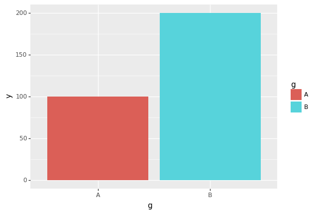
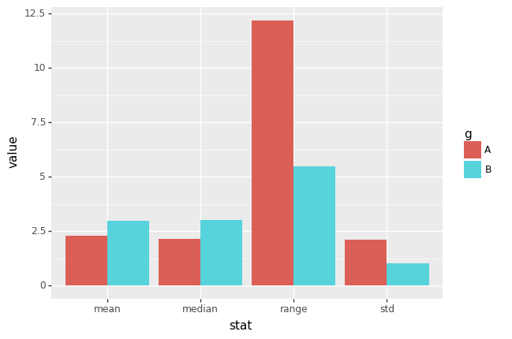
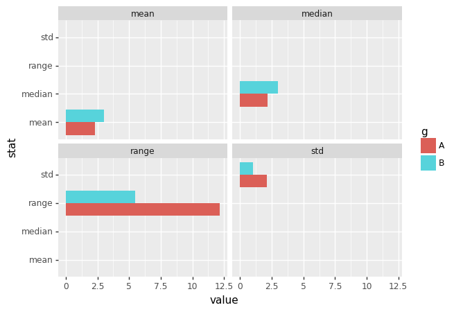
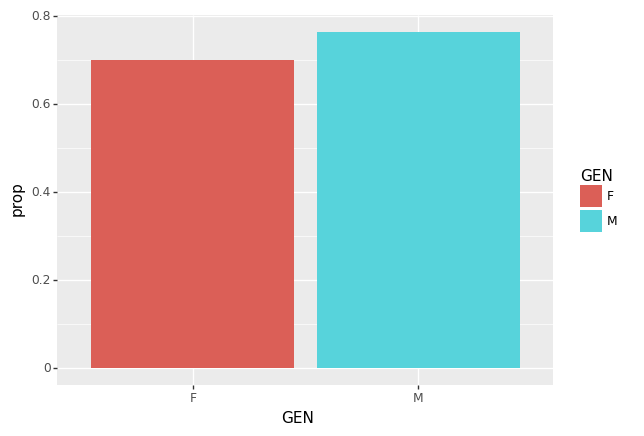
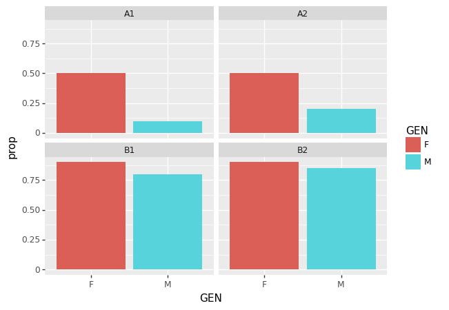

groupyby
df=pd.read_csv('https://raw.githubusercontent.com/PacktPublishing/Pandas-Cookbook/master/data/flights.csv')
df.head()| MONTH | DAY | WEEKDAY | AIRLINE | ORG_AIR | DEST_AIR | SCHED_DEP | DEP_DELAY | AIR_TIME | DIST | SCHED_ARR | ARR_DELAY | DIVERTED | CANCELLED | |
|---|---|---|---|---|---|---|---|---|---|---|---|---|---|---|
| 0 | 1 | 1 | 4 | WN | LAX | SLC | 1625 | 58.0 | 94.0 | 590 | 1905 | 65.0 | 0 | 0 |
| 1 | 1 | 1 | 4 | UA | DEN | IAD | 823 | 7.0 | 154.0 | 1452 | 1333 | -13.0 | 0 | 0 |
| 2 | 1 | 1 | 4 | MQ | DFW | VPS | 1305 | 36.0 | 85.0 | 641 | 1453 | 35.0 | 0 | 0 |
| 3 | 1 | 1 | 4 | AA | DFW | DCA | 1555 | 7.0 | 126.0 | 1192 | 1935 | -7.0 | 0 | 0 |
| 4 | 1 | 1 | 4 | WN | LAX | MCI | 1720 | 48.0 | 166.0 | 1363 | 2225 | 39.0 | 0 | 0 |
특정변수기준으로 나누고 평균을 구하자.
- 방법 1
| ARR_DELAY | |
|---|---|
| AIRLINE | |
| AA | 5.542661 |
| AS | -0.833333 |
| B6 | 8.692593 |
| DL | 0.339691 |
| EV | 7.034580 |
| F9 | 13.630651 |
| HA | 4.972973 |
| MQ | 6.860591 |
| NK | 18.436070 |
| OO | 7.593463 |
| UA | 7.765755 |
| US | 1.681105 |
| VX | 5.348884 |
| WN | 6.397353 |
- 방법 2
| ARR_DELAY | |
|---|---|
| AIRLINE | |
| AA | 5.542661 |
| AS | -0.833333 |
| B6 | 8.692593 |
| DL | 0.339691 |
| EV | 7.034580 |
| F9 | 13.630651 |
| HA | 4.972973 |
| MQ | 6.860591 |
| NK | 18.436070 |
| OO | 7.593463 |
| UA | 7.765755 |
| US | 1.681105 |
| VX | 5.348884 |
| WN | 6.397353 |
- 방법 3
AIRLINE
AA 5.542661
AS -0.833333
B6 8.692593
DL 0.339691
EV 7.034580
F9 13.630651
HA 4.972973
MQ 6.860591
NK 18.436070
OO 7.593463
UA 7.765755
US 1.681105
VX 5.348884
WN 6.397353
Name: ARR_DELAY, dtype: float64- 방법 4
AIRLINE
AA 5.542661
AS -0.833333
B6 8.692593
DL 0.339691
EV 7.034580
F9 13.630651
HA 4.972973
MQ 6.860591
NK 18.436070
OO 7.593463
UA 7.765755
US 1.681105
VX 5.348884
WN 6.397353
Name: ARR_DELAY, dtype: float64- 방법 5
AIRLINE
AA 5.542661
AS -0.833333
B6 8.692593
DL 0.339691
EV 7.034580
F9 13.630651
HA 4.972973
MQ 6.860591
NK 18.436070
OO 7.593463
UA 7.765755
US 1.681105
VX 5.348884
WN 6.397353
Name: ARR_DELAY, dtype: float64- 방법 2와 방법 4는 사용자정의 함수를 쓸 수 있다는 장점이 있음.
| ARR_DELAY | |
|---|---|
| AIRLINE | |
| AA | -5.542661 |
| AS | 0.833333 |
| B6 | -8.692593 |
| DL | -0.339691 |
| EV | -7.034580 |
| F9 | -13.630651 |
| HA | -4.972973 |
| MQ | -6.860591 |
| NK | -18.436070 |
| OO | -7.593463 |
| UA | -7.765755 |
| US | -1.681105 |
| VX | -5.348884 |
| WN | -6.397353 |
| ARR_DELAY | |
|---|---|
| AIRLINE | |
| AA | -5.542661 |
| AS | 0.833333 |
| B6 | -8.692593 |
| DL | -0.339691 |
| EV | -7.034580 |
| F9 | -13.630651 |
| HA | -4.972973 |
| MQ | -6.860591 |
| NK | -18.436070 |
| OO | -7.593463 |
| UA | -7.765755 |
| US | -1.681105 |
| VX | -5.348884 |
| WN | -6.397353 |
- 입력이 여러개인 사용자 정의 함수도 사용가능함
AIRLINE
AA 30.721086
AS 0.694444
B6 75.561166
DL 0.115390
EV 49.485310
F9 185.794656
HA 24.730460
MQ 47.067715
NK 339.888677
OO 57.660681
UA 60.306954
US 2.826113
VX 28.610564
WN 40.926120
Name: ARR_DELAY, dtype: float64AIRLINE,WEEKDAY \(\to\) {CANCELLED: sum}
AIRLINE,WEEKDAY \(\to\) {CANCELLED: sum, mean} , {DIVERTED: sum, mean}
| CANCELLED | DIVERTED | ||||
|---|---|---|---|---|---|
| sum | mean | sum | mean | ||
| AIRLINE | WEEKDAY | ||||
| AA | 1 | 41 | 0.032106 | 6 | 0.004699 |
| 2 | 9 | 0.007341 | 2 | 0.001631 | |
| 3 | 16 | 0.011949 | 2 | 0.001494 | |
| 4 | 20 | 0.015004 | 5 | 0.003751 | |
| 5 | 18 | 0.014151 | 1 | 0.000786 | |
| ... | ... | ... | ... | ... | ... |
| WN | 3 | 18 | 0.014118 | 2 | 0.001569 |
| 4 | 10 | 0.007911 | 4 | 0.003165 | |
| 5 | 7 | 0.005828 | 0 | 0.000000 | |
| 6 | 10 | 0.010132 | 3 | 0.003040 | |
| 7 | 7 | 0.006066 | 3 | 0.002600 | |
98 rows × 4 columns
AIRLINE,WEEKDAY \(\to\) {CANCELLED: sum, mean, size} , {AIR_TIME: mean,var}
df.groupby(["AIRLINE","WEEKDAY"]).agg({ "CANCELLED" : [sum,np.mean,len],
"AIR_TIME" : [np.mean,np.var]})| CANCELLED | AIR_TIME | |||||
|---|---|---|---|---|---|---|
| sum | mean | len | mean | var | ||
| AIRLINE | WEEKDAY | |||||
| AA | 1 | 41 | 0.032106 | 1277 | 147.610569 | 5393.806723 |
| 2 | 9 | 0.007341 | 1226 | 143.851852 | 5359.890719 | |
| 3 | 16 | 0.011949 | 1339 | 144.514005 | 5378.854539 | |
| 4 | 20 | 0.015004 | 1333 | 141.124618 | 4791.524627 | |
| 5 | 18 | 0.014151 | 1272 | 145.430966 | 5884.592076 | |
| ... | ... | ... | ... | ... | ... | ... |
| WN | 3 | 18 | 0.014118 | 1275 | 104.219920 | 2901.873447 |
| 4 | 10 | 0.007911 | 1264 | 107.200800 | 2966.568935 | |
| 5 | 7 | 0.005828 | 1201 | 107.893635 | 3268.717093 | |
| 6 | 10 | 0.010132 | 987 | 109.247433 | 3152.753719 | |
| 7 | 7 | 0.006066 | 1154 | 107.602273 | 3183.126889 | |
98 rows × 5 columns
cut 함수
- 목표 : DIST를 적당한 구간으로 나누어 카테고리화 하고 그것을 바탕으로 groupby를 수행하자.
count 58492.000000
mean 872.900072
std 624.996805
min 67.000000
25% 391.000000
50% 690.000000
75% 1199.000000
max 4502.000000
Name: DIST, dtype: float64- 구간을 아래와 같이 설정한다.
| DIVERTED | ||
|---|---|---|
| cuts | AIRLINE | |
| (-inf, 400.0] | AA | 0 |
| B6 | 0 | |
| DL | 1 | |
| EV | 3 | |
| F9 | 0 | |
| MQ | 0 | |
| NK | 0 | |
| OO | 5 | |
| UA | 2 | |
| US | 0 | |
| VX | 0 | |
| WN | 1 | |
| (400.0, 700.0] | AA | 3 |
| AS | 0 | |
| B6 | 0 | |
| DL | 12 | |
| EV | 8 | |
| F9 | 1 | |
| MQ | 4 | |
| NK | 1 | |
| OO | 7 | |
| UA | 1 | |
| US | 0 | |
| VX | 0 | |
| WN | 2 | |
| (700.0, 1200.0] | AA | 10 |
| AS | 0 | |
| B6 | 1 | |
| DL | 6 | |
| EV | 4 | |
| F9 | 0 | |
| MQ | 1 | |
| NK | 1 | |
| OO | 5 | |
| UA | 4 | |
| US | 0 | |
| VX | 0 | |
| WN | 4 | |
| (1200.0, inf] | AA | 13 |
| AS | 0 | |
| B6 | 1 | |
| DL | 5 | |
| EV | 0 | |
| F9 | 1 | |
| HA | 1 | |
| MQ | 0 | |
| NK | 3 | |
| OO | 4 | |
| UA | 12 | |
| US | 1 | |
| VX | 1 | |
| WN | 8 |
| AIRLINE | |
|---|---|
| AIRLINE | |
| AA | 8900 |
| AS | 768 |
| B6 | 543 |
| DL | 10601 |
| EV | 5858 |
| F9 | 1317 |
| HA | 112 |
| MQ | 3471 |
| NK | 1516 |
| OO | 6588 |
| UA | 7792 |
| US | 1615 |
| VX | 993 |
| WN | 8418 |
- cuts을 이용하여 추가그룹핑을 하면 조금 다른 특징들을 데이터에서 발견할 수 있다. - AA항공사와 DL항공사는 모두 비슷한 우회횟수를 가지고 있음. - AA항공사는 700회이상의 구간에서 우회를 많이하고 DL항공사는 400~700사이에서 우회를 많이 한다. (패턴이 다름)
- 구간이름에 label을 붙이는 방법
0 Q2
1 Q4
2 Q2
3 Q3
4 Q4
..
58487 Q4
58488 Q2
58489 Q1
58490 Q3
58491 Q2
Name: DIST, Length: 58492, dtype: category
Categories (4, object): ['Q1' < 'Q2' < 'Q3' < 'Q4']| DIVERTED | ||
|---|---|---|
| DIST | AIRLINE | |
| Q1 | AA | 0 |
| AS | 0 | |
| B6 | 0 | |
| DL | 1 | |
| EV | 3 | |
| F9 | 0 | |
| HA | 0 | |
| MQ | 0 | |
| NK | 0 | |
| OO | 5 | |
| UA | 2 | |
| US | 0 | |
| VX | 0 | |
| WN | 1 | |
| Q2 | AA | 3 |
| AS | 0 | |
| B6 | 0 | |
| DL | 12 | |
| EV | 8 | |
| F9 | 1 | |
| HA | 0 | |
| MQ | 4 | |
| NK | 1 | |
| OO | 7 | |
| UA | 1 | |
| US | 0 | |
| VX | 0 | |
| WN | 2 | |
| Q3 | AA | 10 |
| AS | 0 | |
| B6 | 1 | |
| DL | 6 | |
| EV | 4 | |
| F9 | 0 | |
| HA | 0 | |
| MQ | 1 | |
| NK | 1 | |
| OO | 5 | |
| UA | 4 | |
| US | 0 | |
| VX | 0 | |
| WN | 4 | |
| Q4 | AA | 13 |
| AS | 0 | |
| B6 | 1 | |
| DL | 5 | |
| EV | 0 | |
| F9 | 1 | |
| HA | 1 | |
| MQ | 0 | |
| NK | 3 | |
| OO | 4 | |
| UA | 12 | |
| US | 1 | |
| VX | 1 | |
| WN | 8 |
tidydata
url = 'https://raw.githubusercontent.com/PacktPublishing/Pandas-Cookbook/master/data/state_fruit.csv'
df=pd.read_csv(url,index_col=0)
df| Apple | Orange | Banana | |
|---|---|---|---|
| Texas | 12 | 10 | 40 |
| Arizona | 9 | 7 | 12 |
| Florida | 0 | 14 | 190 |
- 아래와 같이 tidy형태로 있어야 시각화 단계에서 수월하다.
| level_0 | level_1 | 0 | |
|---|---|---|---|
| 0 | Texas | Apple | 12 |
| 1 | Texas | Orange | 10 |
| 2 | Texas | Banana | 40 |
| 3 | Arizona | Apple | 9 |
| 4 | Arizona | Orange | 7 |
| 5 | Arizona | Banana | 12 |
| 6 | Florida | Apple | 0 |
| 7 | Florida | Orange | 14 |
| 8 | Florida | Banana | 190 |
| group1 | group2 | X | |
|---|---|---|---|
| 0 | Texas | Apple | 12 |
| 1 | Texas | Orange | 10 |
| 2 | Texas | Banana | 40 |
| 3 | Arizona | Apple | 9 |
| 4 | Arizona | Orange | 7 |
| 5 | Arizona | Banana | 12 |
| 6 | Florida | Apple | 0 |
| 7 | Florida | Orange | 14 |
| 8 | Florida | Banana | 190 |
melt
url = 'https://raw.githubusercontent.com/PacktPublishing/Pandas-Cookbook/master/data/state_fruit.csv'
df2=pd.read_csv(url)
df2| Unnamed: 0 | Apple | Orange | Banana | |
|---|---|---|---|---|
| 0 | Texas | 12 | 10 | 40 |
| 1 | Arizona | 9 | 7 | 12 |
| 2 | Florida | 0 | 14 | 190 |
| group1 | Apple | Orange | Banana | |
|---|---|---|---|---|
| 0 | Texas | 12 | 10 | 40 |
| 1 | Arizona | 9 | 7 | 12 |
| 2 | Florida | 0 | 14 | 190 |
| group1 | variable | value | |
|---|---|---|---|
| 0 | Texas | Apple | 12 |
| 1 | Arizona | Apple | 9 |
| 2 | Florida | Apple | 0 |
| 3 | Texas | Orange | 10 |
| 4 | Arizona | Orange | 7 |
| 5 | Florida | Orange | 14 |
| 6 | Texas | Banana | 40 |
| 7 | Arizona | Banana | 12 |
| 8 | Florida | Banana | 190 |
df2.rename(columns={"Unnamed: 0":"group1"}).melt(id_vars="group1")\
.rename(columns={"variable":"group2","value":"X"})| group1 | group2 | X | |
|---|---|---|---|
| 0 | Texas | Apple | 12 |
| 1 | Arizona | Apple | 9 |
| 2 | Florida | Apple | 0 |
| 3 | Texas | Orange | 10 |
| 4 | Arizona | Orange | 7 |
| 5 | Florida | Orange | 14 |
| 6 | Texas | Banana | 40 |
| 7 | Arizona | Banana | 12 |
| 8 | Florida | Banana | 190 |
- step 1
- step 2
Barplot + 해들리위컴의 그래프레이어
g=['A']*100+['B']*200
y=list(np.random.randn(100)*2+2)+list(np.random.randn(200)+3)
df=pd.DataFrame({'g':g,'y':y})
df| g | y | |
|---|---|---|
| 0 | A | 3.496290 |
| 1 | A | 5.670306 |
| 2 | A | 1.420710 |
| 3 | A | 0.884727 |
| 4 | A | 5.234113 |
| ... | ... | ... |
| 295 | B | 2.500456 |
| 296 | B | 4.440529 |
| 297 | B | 4.374318 |
| 298 | B | 2.744871 |
| 299 | B | 1.898557 |
300 rows × 2 columns
- geom_bar : 특정 컬럼값을 디폴트로 카운트함
- 위 코드는 다음 코드를 디폴트로 한것이다.
(
ggplot(df.groupby(by='g').count().reset_index()) +
geom_bar(aes(x="g",y="y",fill="g"),stat="identity")
)
<ggplot: (8779086795864)>다양한 요약값을 이용해보기
| y | ||||
|---|---|---|---|---|
| mean | median | std | <lambda_0> | |
| g | ||||
| A | 2.275751 | 2.144761 | 2.109639 | 12.169683 |
| B | 2.991754 | 3.007031 | 1.034663 | 5.466597 |
| g | stat | value | |
|---|---|---|---|
| 0 | A | mean | 2.275751 |
| 1 | B | mean | 2.991754 |
| 2 | A | median | 2.144761 |
| 3 | B | median | 3.007031 |
| 4 | A | std | 2.109639 |
| 5 | B | std | 1.034663 |
| 6 | A | range | 12.169683 |
| 7 | B | range | 5.466597 |

<ggplot: (8779086833301)>coord_filp()
facet_wrap()
(
ggplot(td) +
geom_bar(aes(x="stat",y="value",fill="g"),stat="identity",position="dodge") +
coord_flip()+
facet_wrap("stat")
)
<ggplot: (8779086783419)>심슨의 역설
- 아래와 같은 대학합격률 데이터가 있다고 하자.
시각화 1
| DEP | STATE | GEN | COUNT | |
|---|---|---|---|---|
| 0 | A1 | PASS | M | 1 |
| 1 | A1 | FAIL | M | 9 |
| 2 | A2 | PASS | M | 2 |
| 3 | A2 | FAIL | M | 8 |
| 4 | B1 | PASS | M | 80 |
| 5 | B1 | FAIL | M | 20 |
| 6 | B2 | PASS | M | 85 |
| 7 | B2 | FAIL | M | 15 |
| 8 | A1 | PASS | F | 5 |
| 9 | A1 | FAIL | F | 5 |
| 10 | A2 | PASS | F | 5 |
| 11 | A2 | FAIL | F | 5 |
| 12 | B1 | PASS | F | 9 |
| 13 | B1 | FAIL | F | 1 |
| 14 | B2 | PASS | F | 9 |
| 15 | B2 | FAIL | F | 1 |
df1=df.groupby(['GEN','STATE']).agg({'COUNT':np.sum}).reset_index()
g_sum =df1.groupby("GEN")["COUNT"].sum().to_list()
g_sum =list(np.repeat(g_sum,2))
df1["prop"] = df1["COUNT"]/g_sum
df1| GEN | STATE | COUNT | prop | |
|---|---|---|---|---|
| 0 | F | FAIL | 12 | 0.300000 |
| 1 | F | PASS | 28 | 0.700000 |
| 2 | M | FAIL | 52 | 0.236364 |
| 3 | M | PASS | 168 | 0.763636 |
(
ggplot(df1.query("STATE =='PASS'")) +
geom_bar(aes(x="GEN",y="prop",fill="GEN"),stat="identity")
)
<ggplot: (8779086857075)>- 남학생의 합격률이 더 높아 보인다. \(\to\) 남녀차별인가?
시각화 2: 학과별 합격률
| DEP | GEN | SUM | STATE | COUNT | prop | |
|---|---|---|---|---|---|---|
| 0 | A1 | F | 10 | PASS | 5 | 0.50 |
| 1 | A1 | F | 10 | FAIL | 5 | 0.50 |
| 2 | A1 | M | 10 | PASS | 1 | 0.10 |
| 3 | A1 | M | 10 | FAIL | 9 | 0.90 |
| 4 | A2 | F | 10 | PASS | 5 | 0.50 |
| 5 | A2 | F | 10 | FAIL | 5 | 0.50 |
| 6 | A2 | M | 10 | PASS | 2 | 0.20 |
| 7 | A2 | M | 10 | FAIL | 8 | 0.80 |
| 8 | B1 | F | 10 | PASS | 9 | 0.90 |
| 9 | B1 | F | 10 | FAIL | 1 | 0.10 |
| 10 | B1 | M | 100 | PASS | 80 | 0.80 |
| 11 | B1 | M | 100 | FAIL | 20 | 0.20 |
| 12 | B2 | F | 10 | PASS | 9 | 0.90 |
| 13 | B2 | F | 10 | FAIL | 1 | 0.10 |
| 14 | B2 | M | 100 | PASS | 85 | 0.85 |
| 15 | B2 | M | 100 | FAIL | 15 | 0.15 |
(
ggplot(td.query("STATE=='PASS'")) +
geom_bar(aes(x="GEN",y="prop",fill="GEN"),stat="identity") +
facet_wrap("DEP")
)
<ggplot: (8779086903858)>- 즉 전체적으로 보았을 때는 남학생의 합격률이 더 높은 것 같지만, 학과별로 변수를 나누어서 살펴본 결과 여학생의 합격률이 더 높았다는 것이다.